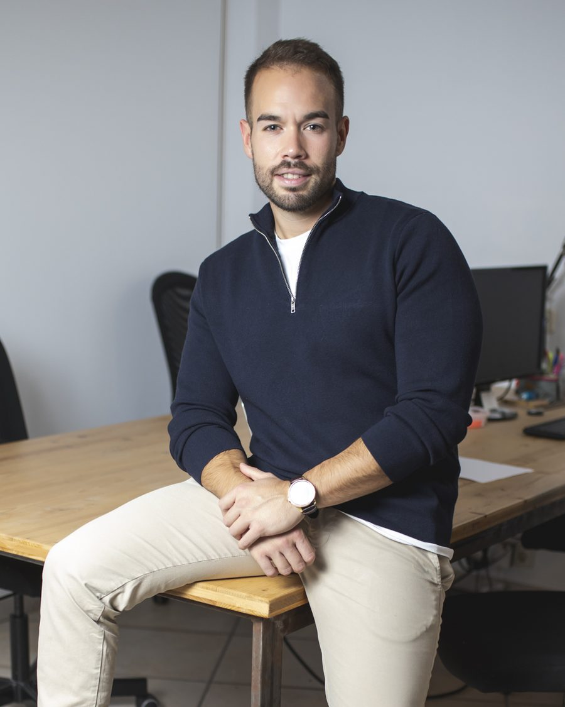

Analizamos marketing, ventas y datos para encontrar dónde estás perdiendo oportunidades y qué deberías solucionar primero.
¿Aún no estás para una llamada? Haz el auto-diagnóstico en 3 minutos
Marketing
Campañas · SEO · contenido · outbound
Ventas
Leads · llamadas · seguimiento · cierres
Dirección
CAC · ingresos · rentabilidad
Cuando cada área mira sus propios números, es difícil saber dónde se está perdiendo realmente el negocio.
Campañas que siguen activas porque nadie las ha revisado.
Contenido que se publica porque hay que publicar.
Un canal nuevo antes de entender los que ya tienes.
Nos metemos en todo tu sistema de captación y ventas, detectamos los puntos de fuga y priorizamos qué deberías solucionar primero.
Una radiografía de tu sistema de captación y ventas.
01 · Mapa
Cómo funciona actualmente tu sistema.
02 · Fugas
Dónde estás perdiendo oportunidades.
03 · Prioridades
Qué deberías solucionar primero.
04 · Roadmap
Qué hacer, en qué orden y cómo medirlo.
Entendemos
Tu negocio, canales, datos y proceso comercial.
Detectamos
Dónde se pierden oportunidades y dinero.
Priorizamos
Qué tiene mayor impacto solucionar primero.
Implementamos
Sin casarnos con ningún canal.
Medimos
Qué cambia y qué impacto tiene en el negocio.
No hacemos más marketing por hacer. Hacemos que el que necesitas funcione.
Visión transversal
Growth, paid media, funnels, CRM, automatización, outbound, analítica y ventas.
Criterio
No partimos de una solución que tenemos que venderte. Partimos del problema.
Ejecución
Si encontramos una fuga, podemos solucionarla contigo.

Detrás de Qualivo
Llevo años trabajando en Growth y construyendo sistemas de captación y ventas para empresas de formación, servicios y B2B.
He trabajado desde campañas y funnels hasta CRM, automatización, analítica y procesos comerciales. Esa visión transversal es la que aplico en Qualivo — para analizar y para ejecutar, con un equipo detrás en medios pagados, creatividades, vídeo, CRM y automatización.
¿Ya tienes agencia? Perfecto. El diagnóstico puede demostrar que está haciendo bien su trabajo y que el problema está en ventas, CRM, cualificación, seguimiento o en otra parte del sistema.
Casos
El problema no era conseguir más leads. Era saber cuáles merecían atención.
Nuria Roure · Formación y servicios online · Sistema de captación y ventas
2.000 € → 12.900 €
Leer el caso →
No había un sistema que optimizar. Tuvimos que construirlo.
BelloVinilo · B2B · Reformas y revestimientos
3.600 € → 30.000 €
Leer el caso →
De la inversión publicitaria a la matrícula, con todo medido.
Escola Aeronàutica de Catalunya · Formación · Captación de alumnos
ROAS 10,2× · 44.000 € atribuidos en un mes
Leer el caso →
Generaban leads sin parar. Pero volaban a ciegas.
Eleva Academy · Formación · Medición y optimización
+102 % entrevistas · CPL de Google −61 %
Leer el caso →
Leads cualificados de electricista a 3 €, con todo automatizado.
Focus Practical · Formación de oficios · Captación + CRM
CPL −53 % · lead → CRM en ~8 seg
Leer el caso →
El diagnóstico determina la solución. No al revés.
Recursos
Herramientas gratuitas para empezar a ver tu sistema de captación y ventas con otros ojos.
Una radiografía completa de tu sistema de captación y ventas: mapeamos cómo funciona hoy, detectamos dónde estás perdiendo oportunidades, priorizamos por impacto y te entregamos un roadmap con qué hacer, en qué orden y cómo medirlo.
Sí. El diagnóstico evalúa el sistema completo — campañas, funnels, CRM, cualificación, seguimiento y ventas — y no sustituye a tu agencia. A veces demuestra que tu agencia hace bien su trabajo y el problema está en otra parte del sistema.
Para negocios que ya facturan más de 500.000 € al año, con varios canales activos y un equipo o proceso comercial detrás. Por debajo de esa escala, un diagnóstico completo costaría más de lo que devuelve — y te lo diremos con la misma honestidad.
Tú decides: puedes implementar el roadmap con tu equipo o tu agencia, o hacerlo con nosotros — trabajamos con especialistas en medios pagados, creatividades, vídeo, CRM y automatización. No nos casamos con ningún canal.
Rellena el formulario contándonos cómo captas clientes y qué números estás viendo, o haz primero el auto-diagnóstico express de 3 minutos. Respondemos en menos de 24 horas.
Cuéntanos cómo estás captando clientes y qué números estás viendo. Analizamos el contexto y te decimos si vemos suficiente potencial para ayudarte.
Coge el hueco que te venga bien. Revisamos tus respuestas y tu web antes de la llamada.
Calendario embebido
Si no ves el email de confirmación en cinco minutos, mira en spam.
Un diagnóstico de sistema completo tiene sentido cuando ya conviven varios canales y hay un equipo comercial detrás. Por debajo de esa escala te costaría más de lo que te devolvería.
Escríbenos igualmente si crees que tu caso es una excepción.